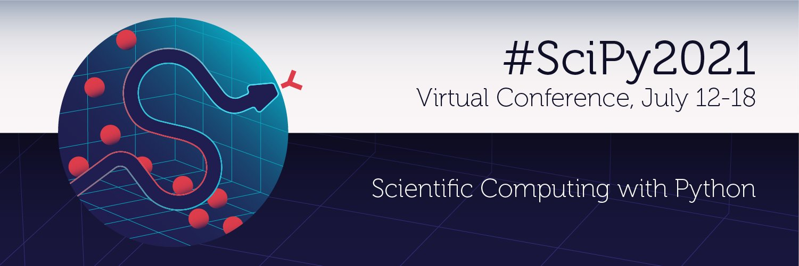
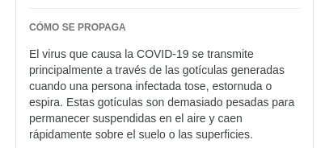
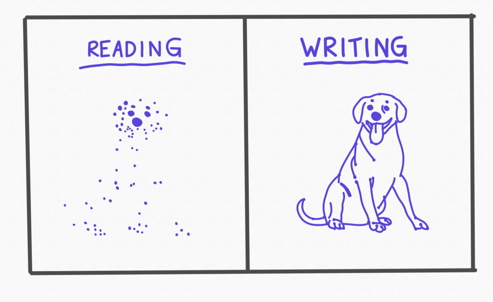
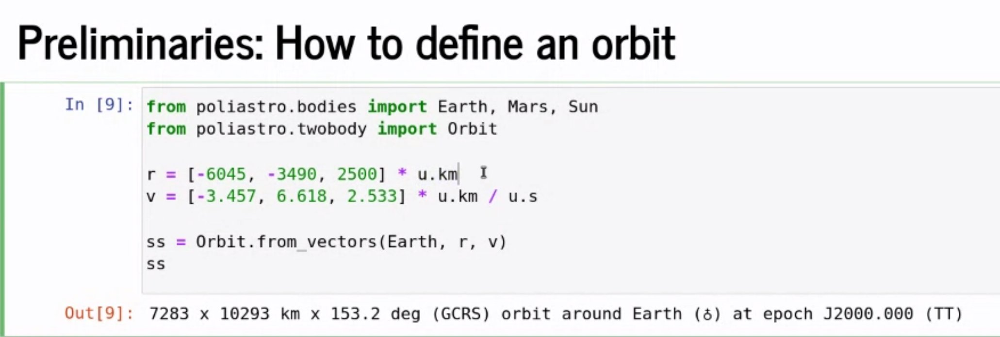

RT @timeyoutakeit: But does GitHub Copilot write your docs for you? 🤔
Replying to @willmcgugan
Thoughts on trio vs asyncio? I found this by @vorpalsmith eye-opening https://vorpus.org/blog/notes-on-structured-concurrency-or-go-statement-considered-harmful/ and, after a few projects with asyncio, learned to hate unstructured concurrency.
FLOSS people: "GitHub Copilot is bad! This is derivative works but IANAL! Copyleft everything!"
Also FLOSS people: "Wow look at that, issue forms, Codespaces, VS Code plugins, GH Actions, sign me up 😍"
Replying to @juanluisback
I'm not saying that this doesn't matter. I'm not even picking sides because I don't bother.
We have collectively surrendered to GitHub a long time ago. They have a monopoly, 99.99 % of people don't care, and the company will get away with anything they do.
Replying to @juanluisback
Sorry folks, but if we didn't want to give all the power to a single platform...
We should have looked more seriously at the alternatives instead of falling for every shiny new feature.
Replying to @juanluisback
Anyway, just in case it was not clear: I'm not trying to being super intellectual here, or point out "you're wrong, I'm right".
I'm just annoyed that everybody on my TL is debating about "copyleft and GH copilot" when most likely this will have ZERO practical consequences.
Replying to @juanluisback
Also: I am sure copyleft licenses are breached every single day, but the FSF and the "software freedom fighters" have been too busy justifying the abhorrent behavior of the biggest asshole in the history of computing, instead of doing any meaningful enforcement or research work.
RT @willmcgugan: Feeling less positive about Github Copilot. It suggests stuff that looks correct on first glance, but is subtly wrong. It…
RT @nicholdav: Please help us find mentors for #SciPy2021 sprints 🙏
Esp if you're a maintainer with beginner-friendly issues. Help us help…
RT @choldgraf: Happy Saturday all ✨ enjoy a new version of Sphinx Copybutton, which updates the button UI/UX to take inspiration from GitHu…
RT @bphogan: Well this blew up.
Good.
I have a SoundCloud and books and whatnot I could promote here. But instead I just want you to sp…
Dear students, please don't do this:
true = False
Disney predicted Artificial Intelligence in 1940
Replying to @pradyunsg
https://sourceforge.net/p/docutils/bugs/419/ 🙈
Replying to @evildmp
Congrats Daniele, well deserved 👏🏼
RT @SciPyConf: Don't miss a session -- subscribe to the #SciPy2021 Google calendar here http://ow.ly/qvId50FdPck

RT @choldgraf: The Executable Books / Jupyter Book team had our first distributed team meeting last week! We hope to use these meetings for…
Si buscas "COVID-19" en @Google todavía te muestra información desactualizada y engañosa, supuestamente de @WHO.
No, las gotículas que transmiten el COVID-19 no caen al suelo rápidamente. La principal forma de transmisión es por aerosoles en suspensión.
Enlace más abajo 👇🏼

Replying to @juanluisback
"Ten scientific reasons in support of airborne transmission of SARS-CoV-2" en @TheLancet https://doi.org/10.1016/S0140-6736(21)00869-2
RT @TerraMeijar: My career took off once I started attending conferences. I remember saving for almost a year for one in particular where a…
Replying to @Nextclouders and @imakefoss
Well, if only push notifications on Calendar worked, or at least if there was someone triaging issues... https://github.com/nextcloud/calendar/issues/3000
RT @david_perell: Read to collect the dots, write to connect them

Replying to @ocefpaf
🤬 Now that they don't have "the former guy", they think their country is perfect.
Replying to @juanluisback
I suffered badly during the worst months of the pandemic seeing our national health system collapse. In Madrid, doctors and nurses are underpaid and have terrible working conditions.
I am glad the pandemic is almost over. But poor management and harmful politics isn't.
Having my (first) COVID-19 #vaccine tomorrow, and thinking a lot about my friends from other countries less privileged than mine.
@EUCouncil @EU_Commission is still sabotaging the #TRIPS temporary waiver for vaccine patents at @wto, which is an absolute shame.
Replying to @juanluisback
I want to do more, but I'm powerless. I'm just a random guy. Institutions and companies now react to social media pressure by proclaiming small symbolic gestures, while people still suffer and often die. There's so much work to do, and yet we keep wasting our time and energy.
Replying to @juanluisback
Two months ago I decided to step back, cool down, and spend less time reading the news. My mental health has improved considerably.
I just wish they lifted the fucking COVID-19 patents. It's cruel. It's unfair. It's dystopian. It's madness.
Replying to @juanluisback
It was said that the pandemic would change us. New economies would flourish. We would take sustainability seriously.
But corporate greed is still the main driver of European and Spanish politics. There is no public sector anymore, all the work is being done by "the Big Four".
Replying to @juanluisback
Sending my best wishes especially to my dear friends in Argentina, Brazil, Colombia, Namibia, Nigeria. Keeping Palestine in my thoughts every day.
Stay safe everyone. This will be over soon.
Hugs.
Replying to @muheuenga, @EUCouncil, @EU_Commission and @wto
Indeed. It breaks my heart that, in the middle of this situation, there's also people refusing to take the vaccines. Happy that you're getting your shot soon too.
RT @readthedocs: Learn more about Read the Docs directly from its team members: check out this summary of our appearances in the media duri…
RT @ericholscher: We've been adding various guides to the RTD docs and working on an official Sphinx tutorial. We've worked with the contri…
RT @reydelhumo: "Any news on this?" https://twitter.com/alexellisuk/status/1349445747868127237
*Narrator: Juanlu wanted to read Lawful Good papers, but he only encountered Chaotic Evil ones* https://twitter.com/JBorrow/status/1412341091551039488
Replying to @ChristianHeimes
I confess I muted dabeaz some time ago. I'm just tired of the endless negativity towards what Python is today.
RT @ralfgommers: If you are stuck in a place where you need to deal with HPC clusters running something like CentOS 6 (past its EOL date) -…
Replying to @Mbussonn, @ProjectJupyter and @DEShawGroup
And if I wanted to do `from sympy import cos` instead? ;)
RT @Mbussonn: Want to speedup time to first plot in @IPython_dev/@ProjectJupyter ? Tired of importing things by hand ? Have a look at how…
Replying to @fisadev
¡Nos hemos vacunado el mismo día!
RT @Senficon: #GitHubCopilot is not infringing your #copyright: The #FreeSoftware community should not adopt a maximalist copyright stance…
"That is why it is so absurd when copyleft enthusiasts argue for an extension of copyright. Any extension of prohibition rights not only strengthens the enforcement of copyleft licences, but also the much more widespread copyright licences, which aim to achieve the [...]opposite" https://twitter.com/Senficon/status/1411997803098914819
RT @lgworld: High time to talk about Audacity and privacy in a less heated way, eh?
https://librearts.org/2021/07/audacity-privacy/
"Expecting people to not use any proprietary technology and judging people for not meeting this standard pushes people away from our movement. People who are coerced into using proprietary technology deserve our empathy and invitation into our movement, not condescension."
❤️
Replying to @juanluisback
https://cooperativetechnology.codeberg.page/
Replying to @fisadev and @vicfabrice
A mí Moderna no me pegó tan duro pero estoy "hecho bolsa" un poco jeje, ¡ánimo que en dos días se pasa!
RT @Senficon: Apple founder Steve Wozniak backs #RightToRepair movement: https://www.bbc.com/news/technology-57763037
RT @readthedocs: In our freshly published July newsletter, you will find our company highlights, what new features we have shipped during t…
Replying to @Perestupinya and @brunosan
Aquí lo que falla como siempre es la comprensión lectora. El ministro ha recomendado "comer menos" y algunos han escuchado "no comer". Con este nivel no se puede hablar de absolutamente nada.
RT @jacobian: FWIW I'm neither "for" nor "against" Copilot -- and in fact think drawing battle lines that stark is a massive part of the pr…
Replying to @choldgraf and @zkat__
Looks like several people are attempting similar things at different places https://twitter.com/juanluisback/status/1413067423847178240
RT @wuoulf: Here is a summary of the latest mamba release – let us know if package resolutions are improving for you! This might be the las…
Thanks @tk0miya and the Sphinx development team! 🙌🏼 https://twitter.com/tk0miya/status/1414275310162485251
I'll be all week at #SciPy2021. If you want to chat about scientific documentation, open-source, @readthedocs , or just say hi, reach out in Slack or here! 🚀
Replying to @juanluisback
Starting the tutorial on @ProjectJupyter widgets! 🎥
RT @poliastro_py: Or Astrodynamics 🤓 https://twitter.com/juanluisback/status/1414586590329024512
Replying to @DegenerateConic
😉 https://github.com/scipy/scipy/issues/14390
RT @numpy_team: Last year’s inaugural community survey provided invaluable feedback from the NumPy community. We'd love your input once aga…
Unpopular opinion: I am not excited about billionaires going to (almost) space.
I would be excited about spacefaring nations agreeing on a peaceful (hence non-commercial), collective (hence non-competitive), sustainable (hence non-capitalist) use of space instead.
RT @jtpio: JupyterLite: Jupyter ❤️ WebAssembly ❤️ Python
https://blog.jupyter.org/jupyterlite-jupyter-%EF%B8%8F-webassembly-%EF%B8%8F-python-f6e2e41ab3fa
Replying to @FrancescAlted
The most "popular" opinion, around me at least, seems to be that we *ought* to exploit space resources for commercial purposes, because not doing it is a barrier for our civilization, a wall to our "progress".
Replying to @FrancescAlted
Tsiolkovsky said that we would "leave the cradle" one day. But he didn't say that we have to put a McDonalds on the Moon.
RT @AdamChainz: ✍️ “The Boolean Trap” is a programming anti-pattern where a boolean argument switches behaviour, leading to confusion. In t…
RT @brunosan: ❤️SO excited about this. We are working really hard to put the best geospatial datasets, OSS and compute. This is a huge leap…
Replying to @TerraMeijar
I don't have any certifications, but I think they give you a clear goal and usually a deadline, which are great elements to get motivated. In other words: the usefulness of certifications is the preparation, rather than the credential itself, IMO.
Replying to @NKondjashili and @TerraMeijar
Not really. It's proof for yourself 🙂 And to brag on LinkedIn 😛
Replying to @wmvanvliet
I mean applying the ISS philosophy to *everything* that goes beyond geosynchronous orbit
Replying to @AmazonHelp and @nedbat
So much for Big Data and Artificial Intelligence if humans have to manually clean browsing history.
On a related note, I lost count of how many people connect with me on LinkedIn or other platforms where my name is clearly visible and open with "Hola Jose Luis" 😒 https://twitter.com/freakboy3742/status/1414403854456684546
Replying to @valerybriz
¡Jaj! Voy a compartir esto en LinkedIn, "la red social de concreto" 🤣🤣
Replying to @DegenerateConic and @arclight
Congrats! 🙌🏼
Replying to @juanluisback
Long story short: SciPy started depending on Pythran recently for parts of scipy.signal and scipy.optimize. Pythran transpiles Python to C++ ahead of time! You can read the wonderful announcement of the 1.7.0 release by @Tyler_Reddy here https://mail.python.org/pipermail/scipy-dev/2021-June/024896.html
The tale of a circular build time dependency in SciPy https://github.com/scipy/scipy/issues/14335 I love this thread so much, for various reasons! Keep reading 🧵
Replying to @juanluisback
Pythran uses directed graphs https://en.wikipedia.org/wiki/Directed_graph to detect cycles in its transpilation process. Pythran 0.9.11 depended on NetworkX, a wonderful package for graph manipulation and network analysis.
However... and here comes the juicy part 🍿
Replying to @juanluisback
In particular, SciPy 1.7.0 depended on pythran==0.9.11. The reason is that, so far, Pythran was not following semantic versioning, and new features were often introduced in micro releases, as @ralfgommers pointed out here https://github.com/serge-sans-paille/pythran/issues/1838
Replying to @juanluisback
Therefore, the situation was that SciPy 1.7.0 depended on Pythran 0.9.11, which in turn depended on NetworkX, which in its newest version depended... back on SciPy.
Isn't it ironic that a network analysis library introduces a cycle in the dependency graph? 🤓
Replying to @juanluisback
NetworkX was a pure-Python library, and some parts of it, like their PageRank implementation, "were often so slow that it was painful to run", as @JarrodMillman puts here https://github.com/networkx/networkx/pull/4967#issuecomment-877338272
Therefore, NetworkX 2.6 switched to faster versions... by depending on SciPy! 💥
Replying to @juanluisback
However, a macOS user that wanted to build SciPy from conda surfaced this issue, which could also affect High Performance Computing users, and started a chain reaction ⚙️ https://github.com/scipy/scipy/issues/14335#issuecomment-876976102
Replying to @juanluisback
Luckily for everyone, this only affected a subset of users: those willing to build SciPy from source. As there are wheels for pip in many architectures and Python versions, and conda only installs binaries, the issue went unnoticed in the CI systems of SciPy. 🥷🏼
Replying to @juanluisback
And finally, Pythran decided to trim its dependency tree and be as slim as possible by vendoring a custom implementation of directed graphs, as well as removing some other ancillary deps https://github.com/serge-sans-paille/pythran/pull/1839 thanks Serge Sans Paille for the blazing fast response time 😍
Replying to @juanluisback
(By the way, thanks @pypi for improving the usability of the platform so much in recent years, we don't appreciate your efforts enough! 🙌🏼)
Replying to @juanluisback
At this point, the only options were to release SciPy 1.7.1 with a fix or yanking the problematic NetworkX releases. Luckily again, @JarrodMillman and the rest of the NetworkX team were super receptive, and NetworkX 2.6.0 and 2.6.1 were quickly yanked from @pypi 🏃🏼♂️
Replying to @juanluisback
Thought-provoking question by @ralfgommers : "Perhaps the better solution is to stop distributing sdists altogether." https://github.com/scipy/scipy/issues/14335#issuecomment-877061819
As I said some months ago, "I would love to move to a wheels-only world" https://twitter.com/juanluisback/status/1387700243202969603 Could we make sdists opt-in in pip?
Replying to @juanluisback
Anyway, despite the stressful timeline and the potentially disruptive consequences, everybody reacted very quickly, all emergency procedures worked, and the conversation stayed civil at all times. Kudos to everybody 👏🏼
To close this thread, I'd like to share two more things:
Replying to @juanluisback
We have seen this in the past (@pradyunsg and @brainwane have suffered this with pip *a lot*): are development releases worth it? They impose a significant maintenance burden, and apparently they don't get tested enough. Our automated systems should help us with this.
Replying to @juanluisback
And more food for thought: NetworkX "intentionally had release candidates up for longer than usual for this release hoping to gather some feedback on this particular change" https://github.com/scipy/scipy/issues/14335#issuecomment-877085893 and yet, this problem went unnoticed until the final release.
Replying to @juanluisback
If you have read this far, please leave a comment! I'd like to connect to people that also are passionate about weird things, like open-source scientific packaging 🥰
Pay the maintainers, be kind (all else is details, as @gvwilson said), and happy coding everyone!
Replying to @pleiszenburg
I think that's about the only advantage, but I concede it is quite needed, and also highly entertaining 😃 You put me in a difficult compromise, but if I had to pick between dinosaurs and Musk fanboys... I would stand with the fanboys. At least they bring joy and excitement.
RT @pradyunsg: @juanluisback @brainwane One of the things with release candidates is that it doesn't matter how long you keep them up, if n…
RT @esc___: @pradyunsg @juanluisback @brainwane At @numba_jit we have this issue too! To help us wit that, we also have https://t.co/jeAyxm…
Replying to @zooba and @ralfgommers
Absolutely, sdists are essential and they cover many use cases that binaries will never do.
However, sdists are opt-out at the moment (pip install --only-binary), and I think it would be cool to make them opt-in instead, when the ecosystem is ready (pip install --allow-sdists)
RT @ballingt: @juanluisback @JarrodMillman I especially like @ralfgommers’ concise description of the issue for @JarrodMillman, this is the…
RT @jcea: Great thread. My opinion about doing wheel only releases: 1. Only works if you deploy in a supported platform 2. “impossible to b…
Replying to @jcea
Totally agreed! I think doing wheel-only releases would be a big mistake. However, I wish pip can, at some point, ignore sdists _by default_, so that only power user ask for them. 99 % of the people just don't want to compile from source, they couldn't care less.
Replying to @gvwilson
Hi Greg, you sent me an email 9 years ago asking if I'd want to organize a SC workshop, and I felt I had won the Internet that day. You were an inspiration for me before that, and you still are. Please keep trying to change the world, we need you.
RT @AstroBrigi: @juanluisback @pradyunsg @brainwane The solution is not to remove RC releases but to make sure they are tested as widely as…
"This is the 20th SciPy" 😍 #SciPy2021
"The tests should become operation procedures, and conversely, you shouldn't use anything during operations that you didn't test" #SciPy2021
RT @SciPyConf: Talks are underway at #SciPy2021! Thanks everyone for being here, we hope you have a wonderful time, learn something, and ma…
Replying to @CRLSETEM
Enlace roto :/
RT @jkru: This is awesome (and you can see the crowd go wild via reactjis). the F' framework is open source, so you can actually go look at…
RT @HEPfeickert: 100% in agreement with @NASAJPL's Michael Starch's #SciPy2021 keynote takeaway! Plan for reuse when you build software and…
"Scientific Python Ecosystem: Planning for the next decade" https://scientific-python.org/ @stefanvdwalt announces the initiative at #SciPy2021
RT @amcasari: 📣 hey #OpenSource community managers, project directors + budget mavens
✨ 2021 is >50% complete
📅 do you know the financial…
RT @readthedocs: Do you want to use Jupyter notebooks in your Sphinx documentation and don't know where to start? Are you looking for ways…
RT @mightaswellcode: in a few hours, @shr3ya_malv1ya & i will host a BoF session on Python in Aerospace and Astronomy at @SciPyConf.
we go…
RT @ericholscher: Thanks again to @cziscience who has provided the grant that made this work possible. We're excited to be deeply engaging…
RT @lukedones: @juanluisback reveals vigorous inner solar system trade network with @poliastro_py at #SciPy2021

RT @dillonniederhut: In case you want to plan your own flight to Mars, you can use poliastro to solve for your astrodynamics
- @juanluisb…
Replying to @SylvainCorlay, @ericholscher and @AkhmerovAnton
Interesting! I didn't readily see that in the jupyter-sphinx docs but I don't have prior experience with it. If you have some pointers I'd be keen to have a look :)
RT @WillingCarol: Thanks @ericholscher @readthedocs @cziscience! Hey @SciPyConf folks, you may be interested in this guide. Great content a…
Quite productive networking session about documentation at #SciPy2021. We talked about Sphinx, mentioned https://diataxis.fr/, discussed what makes writing documentation difficult, and more. Thanks everyone, and see you tomorrow!
RT @BMtHart: Just uninstalled Matlab and installed PyTorch to do some deep learning.
RT @ralfgommers: Had a great time at #SciPy2021 yesterday, best virtual conference experience I've had so far!
Gave a talk together with…
RT @martinRenou: Want to make your custom #JupyterLite deployment? Thanks to @jtpio, it's as simple as using the http://github.com/jupyterlite/demo re…
Replying to @calebccff, @postmarketOS, @thepine64 and @UBports
A kernel update bricked mine in December, it doesn't boot anymore and I'm trying to find a spare weekend to fix it... So, it's now a paperweight :/
Replying to @fperez_org, @stefanvdwalt, @cournape, @mrocklin, @AstroBrigi, @eeglab2, @thefreemanlab and @mybinderteam
For the uninitiated, what is the quote? :)
Replying to @mrocklin, @AstroBrigi, @stefanvdwalt and @eeglab2
More on that: what if we reflect on the things listed there as "advantages of MATLAB"?
- "complex system to install libraries": conda!
- "3-D interactive graphics with transparency": Plotly, PyVista, others
- "powerful debugging tools": Admittedly depends on the IDE
👇🏼
Replying to @mrocklin, @AstroBrigi, @stefanvdwalt and @eeglab2
- "image processing toolbox": what is missing in scikit-image and Pillow?
- "signal processing toolbox": what is missing in scipy.signal?
- "optimization toolbox": what is missing in scipy.optimize?
- "bioinformatics toolbox": ?
- "virtual reality toolbox": ?
👇🏼
Replying to @mrocklin, @AstroBrigi, @stefanvdwalt and @eeglab2
- "the MATLAB compiler": hmm maybe PyInstaller comes close, but it's difficult to get right, and it's not exactly AOT compiling. To my knowledge there are no good AOT Python compilers yet, and probably there won't be for a long time, if ever.
👇🏼
Replying to @mrocklin, @AstroBrigi, @stefanvdwalt and @eeglab2
It's easy to scoff at these rants and cherry-pick silly things (like 0-based indexing) but they have a core of truth. Listing these alleged weaknesses and working on them will make the ecosystem stronger, and allow Python to break into places where "open tools" are not a priority
Once a year, the Scientific Python community picks on a "MATLAB vs Python" poorly-written rant.
And once a year we need to remember that MATLAB is a powerful ecosystem that we still have a lot to learn from.
(My responses are in the thread) https://twitter.com/mrocklin/status/1415675325904670720
Replying to @choldgraf, @fperez_org, @stefanvdwalt, @cournape, @mrocklin, @AstroBrigi, @eeglab2, @thefreemanlab and @mybinderteam
Bookmarking this 🙃 Thanks!
Replying to @pradyunsg
Despite my best GitHub search-fu abilities, I can't seem to find it 🙃
Super exceited about @fperez_org keynote at #SciPy2021 😍
RT @HEPfeickert: It is nothing short of amazing to think that IPython started with @fperez_org thinking of trying an "afternoon hack". :) T…
RT @fperez_org: Thank you so much to the #SciPy2021 organizers and this entire community, that has made my entire career possible, from ear…
RT @pyblogsal: After a lot of work, we have finished the implementation of PEP 657 🚀🎉. In Python 3.11🐍, tracebacks will annotate where exac…
Replying to @hynek
This is incredibly insightful, it will take me weeks or months to fully process it... Thanks a lot for writing it!
- Scientific code was written in MATLAB,
- Professional code was written in Java,
- Fast code was written in C++,
- Fastest code was written in Fortran
Robert Kern at #SciPy2021
Tomorrow I will be leading a documentation sprint at #SciPy2021 - if you want to write docs to your project or someone else's, ask for advice with Sphinx, reST, MyST, or just chat about scientific docs, join us! https://www.scipy2021.scipy.org/sprints
RT @HEPfeickert: That's a wrap for the conference agenda for #SciPy2021, so a huge THANK YOU to all the @SciPyConf organizers who made it h…
Replying to @juanluisback
So far so good! Lending a hand to the sktime folks from @turinginst 🙌🏼 and getting some fixes in @readthedocs as well 💪🏼 Lunch break now!
Replying to @juanluisback
Wrapping up, might (or might not) connect tomorrow afternoon for more sprints. Have a great weekend everyone!
RT @NumFOCUS: We are proud to introduce our newest addition to our fiscally sponsored projects: GDAL 🎊🎉
Learn more about GDAL and how to s…
Replying to @poliastro_py, @mxvasile, @Stardust_H2020, @MAE_Strath, @StrathclydeOA and @StrathThemes
👋🏼 from the human behind @poliastro_py 🙃
RT @AlexReibman: This one quick hack has saved me *countless* hours fixing graphs with Jupyter/Python
Explanation + details below: https:/…
@PyLatam ¿Cuándo notifican a les ponentes seleccionades? 🙈
Replying to @PyConES
¡Hola! ¿Cuándo avisan a les ponentes seleccionades? 🙈
@vantpc Hola, ¿vuestro email de soporte técnico es sat@vantpc.es ? Es que... hace un mes y medio que me ignoráis completamente y ya empieza a ser molesto. Mi último correo es sobre un problema bastante llamativo de construcción.
A kernel update broke poweroff and had to rollback. I can't control the fan speed and my laptop overheats (and I've been said this has no solution). Sometimes my desktop randomly freezes.
Look folks, Linux on the desktop is better than years ago. But don't pretend it's *easy*. https://twitter.com/nedbat/status/1417155521493274630
Replying to @juanluisback
Me acaban de llamar por teléfono, ¡muchas gracias!
Replying to @LibertadChC, @datadista, @ecologistas and @Teresaribera
cc @civio 🤔
Replying to @baynanaes
Puf, me encanta cómo suenan. Deberían grabar cuatro o cinco canciones y subirlas a https://bandcamp.com/, yo compraría con gusto. Mientras tanto ojalá me los encuentre por Lavapiés algún día. Muchas gracias por el reportaje ❤️
Replying to @juanluisback
Welp https://forums.linuxmint.com/viewtopic.php?f=18&t=353361
Replying to @brettsky and @llanga
Hot take: More funding going to open source technologies is a good thing, not a bad thing
Replying to @codewithanthony
I know who they are! 😂
RT @paimadhu: Hoarding vaccines is a moral failure, but allowing Covid vaccines to expire is a whole another level of moral bankruptcy
RT @ddbeck: Using the second person (you, your) in your documentation continues to be good and proper https://ddbeck.com/second-person-is-ok/
Replying to @gvwilson
Do you happen to have any pointers at hand about this?
Replying to @gvwilson
Thanks!
Replying to @choldgraf and @2i2c_org
On @readthedocs we are now a team of 6 distributed across 5 different timezones!
Replying to @reydelhumo, @choldgraf, @2i2c_org and @readthedocs
6+2 @ethicaladsio on 2 different timezones, to my count :)
RT @matrixdotorg: Incredibly exciting to get official confirmation that Germany's health service (@gematik1) has standardised on Matrix for…
Replying to @chemoelectric, @ArmyOfBruce and @arclight
Sorry but this is FUD. There have been numerous standardization PEPs (Python Enhancement Proposals) on recent years, related to library development, dependency management, and the like. pip is *way* better, virtualenv is more maintained, there are alternatives like Poetry.
Replying to @anastasiatymo
Congrats! 🥳 May I ask a sneak peek into what tools will you use for the talk? 😇
RT @europython: Are you into data science? Then we have something special for you:
The EuroPython 2021 Data Science Mini-Conference, embe…
RT @KevinLeichtman: Are research journals outdated?
After obtaining my PhD, I’m not tempted to go through peer review process to push out…
Replying to @helge_e
Loosely inspired by the Douglas Adams quote:
“I love deadlines. I love the whooshing noise they make as they go by.”
😂
Really, it's the only method that has worked for me over the years!
RT @BrookeMacnamara: Likewise, Nobel laureates were more likely to have been educated or worked in fields other than the field for which th…
Replying to @SamPartee, @_jack_poulson and @HpcTherapy
That bio made me cackle 😂
Replying to @Captain_Joannah
I'm feeling that pain now 😭
Replying to @fperez_org and @NumFOCUS
First time I saw it was in an @Sydonahi presentation at Python for Astronomy at Flatiron
Replying to @Sydonahi, @fperez_org and @NumFOCUS
Hah, true!
"Speaking of GIL, can you please check the GIL documentation and let me know if this is a thing that we need in Python."
LOL
https://twitter.com/theJohnHerrick/status/1418260277217296387?s=20
RT @pwang: @anacondainc Python continues to dominate and be a popular language, particularly among younger generations. 88% of students sur…
RT @stsewd: New post! Tips to secure your development environment from your computer to your terminal.
https://stsewd.dev/posts/securing-your-dev-environment/
Replying to @stsewd
I learned a thing or two from this, thanks a lot!
RT @ralfgommers: First major milestone reached: SciPy now builds with @mesonbuild on Linux (and it's⚡️fast)!
Blog post about the journey s…
Replying to @ralfgommers and @mesonbuild
This is a-m-a-z-i-n-g, thanks for sharing the detailed writeup as well! Excited about SciPy leading the way for other smaller projects with compiled extensions to switch to Meson 👏🏼
RT @petersuber: Major step forward from @ERC_Research: When researchers list publications in grant applications, they may include "relevant…
Little project I hacked over the weekend to learn some modern JavaScript and @fastapi : an online conversor from reStructuredText and MyST (idea by @ericholscher , design by Ana Costa) https://github.com/astrojuanlu/mystyc
What do folks think?
Replying to @choldgraf, @fastapi and @ericholscher
Hah, thanks! I was so absorbed with the conversation that I forgot about it 😅 You can try it live here:
https://mystyc.herokuapp.com/
"can't get rsync to exclude directory" yahoo answers
Replying to @marlene_zw
Generative art? https://p5js.org/ Live coding? https://sonic-pi.net/ Scientific visualization accidentally going beautiful? https://twitter.com/accidental__aRt
Replying to @marlene_zw
The first time I saw a live coding performance it was actually at @PyConNA and it was AMAZING 😍
RT @sktime_toolbox: You are invited! Join sktime doc #sprint on August 16-19 and contribute to a growing Python package for machine learnin…
Replying to @Lucretiel
Remind me again how snarky tweets not accompanied by a reproducer or a bug report make open source move forward 🙄
Replying to @Lucretiel
Well, you didn't explain if it was a problem with setuptools, pip, requirements.txt, http://setup.py, PyPI...
Replying to @Lucretiel
Ah, I understand your POV now, thanks (and sorry for my unfriendly tweets). I think @kushaldas PEP 582 https://www.python.org/dev/peps/pep-0582/ might alleviate that pain, but in any case one would need a separate installation step. I see how AOT compilation wins here.
RT @ethicaladsio: We scaled our #Django powered ad server to 100 write requests per second using off-the-shelf tools while keeping our clou…
RT @natfriedman: We’ve just added built-in citation support to GitHub so researchers and scientists can more easily receive acknowledgments…